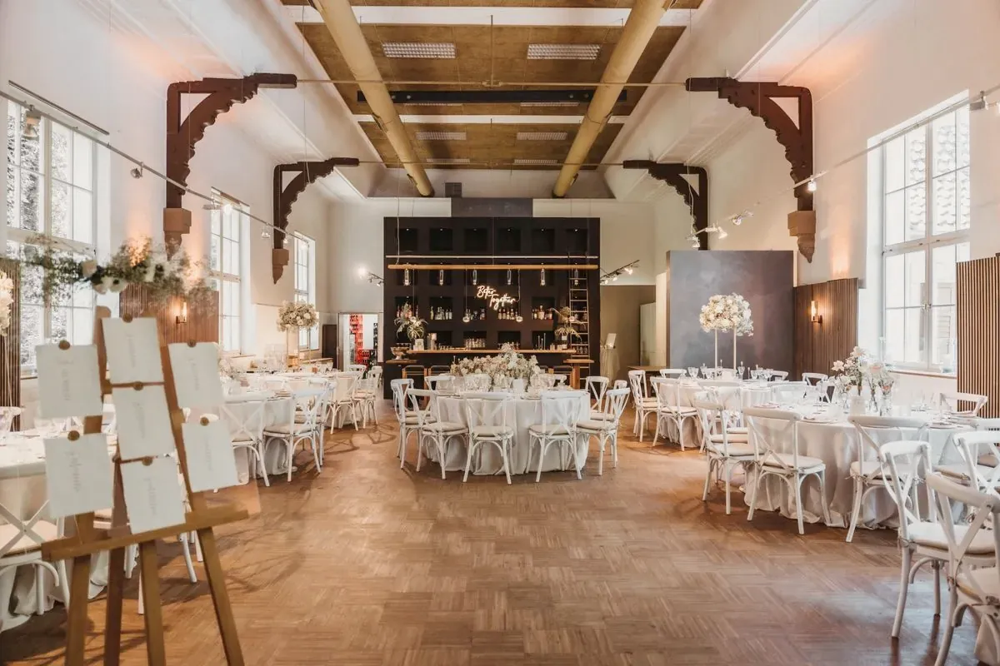

What I do, and what I won’tso nobody’s surprised later

I plan the whole thing or I don’t plan it. A bit of a plan is how days go wrong.
- The budgetA real one, kept up to date, with every line on it and nothing rounded down to make you feel better.
- The timelineWhat has to be decided when, so nothing lands on you all at once.
- The venue searchI go and look, I ask the awkward questions, and I bring you the few worth seeing.
- The suppliersFinding them, lining them up, chasing them and making them work together.
- The guest logisticsInvitations out, replies in, who’s sitting where, who’s sleeping where and how they get there.
- Flowers and stylingOne part of the plan. I’ll set the look and bring in the right people to build it.
- The day itselfI’m on the floor from the first delivery to the last van.
What I don’t do
People assume a planner does all of this. I don’t, and I’d rather lose you now than argue with you later. Some of it has to be yours, some is yours because it’s your family, and some of it nobody can do.
- Your guest listI’ll tell you what it costs. Who’s on it is up to you.
- Officiating, or the legal side of getting marriedThat’s between you and your officiant.
- Signing supplier contracts for youYou sign them, in your name. I read them first.
- Refereeing your familyI’ll keep them moving on the day. I won’t settle what happened at the last christening.
- Licences and permitsAlcohol, permits and temporary structures sit with you and the venue.
- Promising the weatherI can give you a plan for rain. That’s the best anybody can do.

How I choose suppliers
I match people to the job. I find the caterers, the florists, the photographers and the bands that suit your event and your budget, and I tell you why. I don’t keep a preferred list, and I don’t take commission from anyone I recommend.
Anything overhead, and candles
Overhead installations and candles are agreed with the venue, and the venue’s rules decide. I ask before anything gets planned for the ceiling or anything with a flame, and if the answer is no, the plan changes.
Alcohol, permits and temporary structures
These are for you and the venue. I’ll make sure the question gets asked, and I’ll chase the answer, but the responsibility isn’t mine and this site doesn’t claim otherwise.
Access and dietary needs
I ask every venue how people get in, get around and reach the table, and what the kitchen can do. I pass on what they tell me. Those are their answers, so please check them with the venue yourself.

Flowers and styling
I care about how a room looks and I’ll tell you what I think. On every event I set the look with you, and then I bring in the florist and the hire people to build it. It’s one line on the plan. It isn’t the whole plan.
I learned flowers in a shop, so I know when someone’s padding the quote.